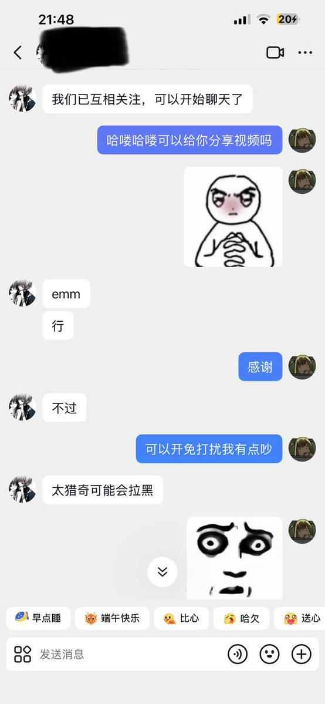

妃宫千早
@neko0202002
@lyxtd3s 正常的，有一句话叫男生心理学就是儿童心理学，男生开智除了跨需要20以后了，而女生会早好久呢，这种人只需要直来直去的，不过他根本听不懂呢

冰块🧊
@lyxtd3s
班上男的，我跟你套近乎还不吃这一套还寄吧的装 你装你妈呢傻逼 我只是想跟班上同学交流一下增近感情不要对我太冷漠我也不是一个高冷的人就这么对我吧，我跟你说可以开免打扰你还真几把的开了什么意思啊 这个客套话听不懂吗 情商堪比一只香蕉我操你妈 https://t.co/KigPXCHid9